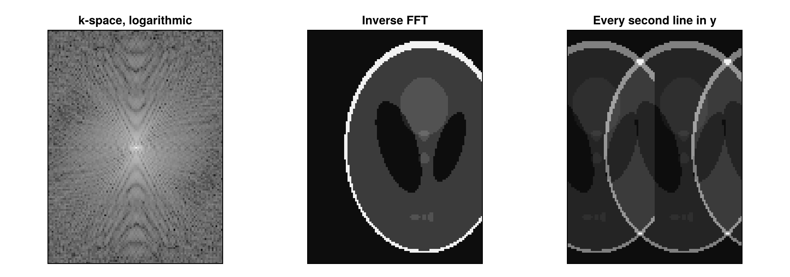

Extract Cartesian k-Space
For Cartesian data, kDataCart returns the k-space of an AcquisitionData object as an array on the Cartesian grid, and AcquisitionData turns such an array back into acquisition data. In between, the k-space can be processed like any other array, for example transformed with FFTW.jl, undersampled or passed to other software, such as BART through BartIO.jl.
Extracting the k-Space
The example simulates the k-space of a phantom with 128 × 96 pixels along a Cartesian trajectory and extracts it:
using MRIReco, MRISimulation, FFTW, CairoMakie
using ImageUtils: shepp_logan
image = shepp_logan(128)[:, 1:96]
params = Dict{Symbol, Any}()
params[:trajName] = "Cartesian"
params[:numSamplingPerProfile] = 128
params[:numProfiles] = 96
acqData = simulation(image, params)
kspace = kDataCart(acqData)
size(kspace)(128, 96, 1, 1, 1, 1)The array has six dimensions: x, the readout direction, y, and z or the slices, followed by the coils, the contrasts and the repetitions. kDataCart puts each sample at its position in the grid of the encoding size and fills the positions that were not measured with zeros.
Reconstructing with an Inverse FFT
The k-space follows the convention of the centered Fourier transform, with the center of k-space at index N ÷ 2 + 1 of a dimension of length N. An inverse FFT along x and y, and for a 3D volume also along z, therefore returns the image, while the coils and the other dimensions stay apart:
imageFFT = fftshift(ifft(ifftshift(kspace, 1:2), 1:2), 1:2)
imageFFT[:, :, 1, 1, 1, 1] ≈ imagetrueThis is what the direct reconstruction of the acquisition data computes, but its result has the contrasts in the fourth and the coils in the fifth dimension:
recoParams = Dict{Symbol, Any}()
recoParams[:reco] = "direct"
recoParams[:reconSize] = (128, 96)
reconstruction(acqData, recoParams) ≈ permutedims(imageFFT, (1, 2, 3, 5, 4, 6))trueUndersampling and Going Back to Acquisition Data
To undersample the data, set the samples that are not measured to zero. The example keeps every second line in the phase encoding direction y, with a mask of Bools, which keeps the element type of the data:
mask = falses(size(kspace))
mask[:, 1:2:end, :, :, :, :] .= true
acqUnder = AcquisitionData(kspace .* mask)
length(acqUnder.subsampleIndices[1])6144AcquisitionData interprets the array as follows:
- It leaves out the samples that are zero in the first coil and the first repetition of each contrast and, for 2D data, in the first slice. The sampling pattern can therefore differ between the contrasts, but not between the coils, slices and repetitions, and a measured sample that happens to be exactly zero there is left out as well (#348).
- It takes a third dimension longer than 1 as the second phase encoding direction of a 3D acquisition. For the slices of a 2D acquisition, pass
enc2D = true; otherwise, it treats the slices as the partitions of a volume. - The array holds neither the field of view nor the sampling times, so
acqUnder.fov, which sets the spacing of the image axes, and all sampling times are zero.acqUnder.fov = acqData.fovrestores the field of view.
The direct reconstruction of the undersampled data shows the phantom and a copy shifted by half the field of view in y, horizontally in the figure, both with half the intensity, because the missing lines alias the image. The figure shows the magnitude of the extracted k-space on a logarithmic scale and the two reconstructions:
xUnder = reconstruction(acqUnder, recoParams)
panels = [log10.(abs.(kspace[:, :, 1, 1, 1, 1]) .+ 1e-3) => "k-space, logarithmic",
abs.(imageFFT[:, :, 1, 1, 1, 1]) => "Inverse FFT",
abs.(xUnder[:, :, 1, 1, 1, 1]) => "Every second line in y"]
fig = Figure(size = (940, 330))
for (i, (data, title)) in enumerate(panels)
ax = Axis(fig[1, i], title = title, aspect = DataAspect(), yreversed = true)
heatmap!(ax, data', colormap = :grays)
hidedecorations!(ax)
end
fig
This page was generated using Literate.jl.